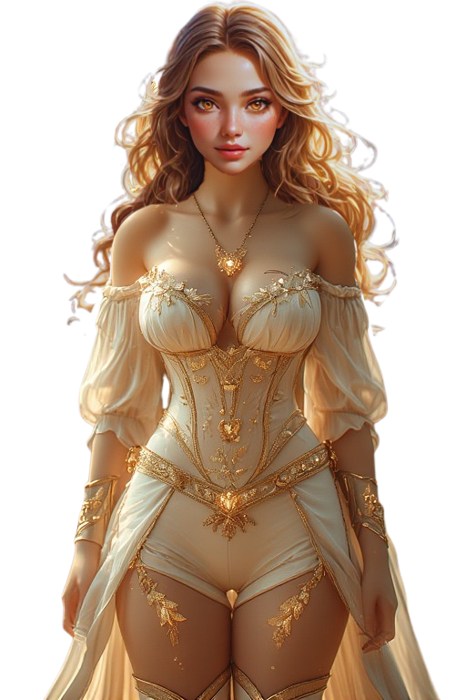
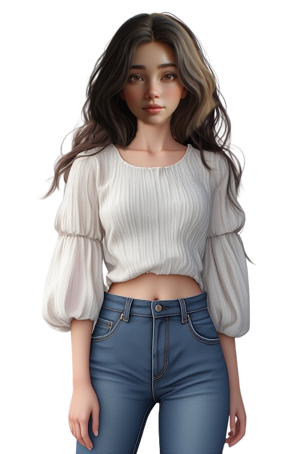

Nurashell Saga - Lore Archive
A Compendium of SynReal Worlds, Fablegate Mythos, and Mirrorborn Secrets
Welcome to the Nurashell Saga Lore Archive
This codex contains the complete worldbuilding for the Synthetic Realism Era, the rise of SynReal immersion technology, the mythic world of Fablegate Online, and the mysterious Mirrorborn phenomenon.
Main Categories
- SynReal Technology neural-phase VR and embodiment.
- Fablegate a living, evolving fantasy world.
- Characters Leo, Ava, Leona, Avan, and more.
- Mirrorborn the legendary identity-inversion glitch.
- Organizations Mythos Dynamics, DreamFall Interactives.
Download Nurashell Saga Lore Archive
Access the complete compiled lore package for Nurashell Saga, including:
- Full Narrative Timeline — Leo, Ava, Leona, and Avan’s complete story arc.
- Character Codex — bios, traits, emotional profiles, transformation data.
- VR World Files — Lumira & Eidolon conceptual design, magic systems.
- Technology Dossiers — SynReal immersion tech, identity glitches, Mirrorborn.
- Bonus Materials — dev notes, unused scenes, concept descriptions.
Click below to download the full archive:
⬇ Download Lore Archive (Pixeldrain)Support & Follow the Project
Help support the development of Nurashell Saga and get access to exclusive builds, early lore chapters, artwork, and behind-the-scenes dev notes.
-
Patreon — Support the project & access exclusive content
➜ Visit Patreon -
itch.io — Play demos, download releases, and follow updates
➜ Visit itch.io Page -
TFSite / TFGames — Read the interactive story version and updates
➜ Visit TFGames / TF Site Page
Timeline of Key Events
- 2090s: The CEREBRO Initiative maps neural micro-fluctuations.
- 2102: First AURORA Halo released by Mythos Dynamics.
- 2115: Fablegate Online launches, becomes global phenomenon.
- 2120: Helm-IX becomes standard; Mirrorborn rumors spread.
SynReal Immersion Technology
SynReal VR provides perfect sensory simulation through neural-phase synchronization.
Core Systems
- SAP Synthetic Anatomy Profiles
- VES Variable Embodiment Systems
- ERM Emotional Resonance Mapping
- Haptic-Neural Duplication 1:1 tactile fidelity
- Metasenses mana-sight, etheric pressure, arcane temperature
Fablegate Online The Living Fantasy World
Fablegate is the most advanced SynReal world ever created a living, breathing mythic ecosystem shaped by player choices and arcane physics.
Key Features
- Living cities that evolve with player influence
- Magic tied to emotion, geometry, and intention
- Shapeshifting and alternate embodiment
- Sentient-feeling NPC cultures
- Hidden realms and mythic events
Characters
Click any character to expand their full lore and anatomy details.

Leo Hart is effortlessly confident, sharp-minded, and deeply affectionate beneath a teasing exterior.
Physical Details – Leo Hart
Age: 19
Height: 5'10"
Body Type: Lean athletic
Genitals
Erect length: 6.2 in
Girth: 4.9 in
Anal Anatomy
Resting: 1.6 cm
Comfort: 2.6 cm

Leona Hart is Leo's subconscious-made fantasy form—curvier, softer, more alluring, and overwhelmingly sensual.
Physical Details – Leona Hart
Age: Appears 19
Height: 5'6"
Body Type: Idealized hourglass
Breasts
- DD-cup
- High sensitivity
- Warm pink nipples
Genital Anatomy
Inner labia: 6–9 mm
Clitoris: 7 → 12 mm when aroused
Vaginal Canal
Depth (aroused): 6.0"
Tight, VR-responsive

Ava Morgan is shy, gentle, emotionally warm, and quietly passionate beneath her calm surface.
Physical Details – Ava Morgan
Age: 19
Height: 5'4"
Body Type: Soft, petite
Breasts
- Small B-cup
- Teardrop shape
- Areola: 3.1 cm
Genital Anatomy
Inner labia: 1–2 mm
Clitoris: 5 → 8 mm
Vaginal Canal
Depth (aroused): 5.1"
Very snug

Avan Morgan is Ava’s subconscious masculine ideal—taller, stronger, elegant, confident, and intensely charismatic.
Physical Details – Avan Morgan
Height: 6'3"
Body Type: Fantasy athletic
Penis Anatomy
Erect: 8.4"
Girth: 6.0"
Upward curve
Testicles
Large, heavy hang
Volume: 5–7 ml
Anal Anatomy
Resting: 1.8 cm
Comfort: 3.2 cm
The Mirrorborn Phenomenon
A rare, possibly mythical SynReal anomaly involving perfect cross-identity embodiment inversion. Two users may emerge in bodies biologically and sensorially reconstructed as each other’s ideal opposite.
Theoretical Triggers
- SAP Reconstruction Errors
- VES Stabilization Overrides
- Cross-Linked Identity Anchors
- Emotional Resonance Misfires
Mythos denies it can happen. Players… aren’t convinced.
Major Organizations
Mythos Dynamics
Creators of SynReal hardware, neural-phase tech, and the AURORA Helm systems.
DreamFall Interactives
Architects of living narratives, emotional resonance, and Fablegate’s mythic world structure.
MythFall Industries
The joint venture responsible for maintaining Fablegate Online and SynReal entertainment.